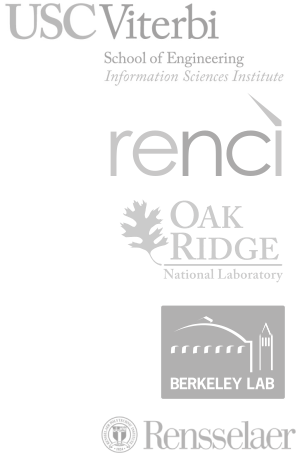

Panorama 360: Performance Data Capture and Analysis for End-to-end Scientific Workflows
Provide a resource for the collection, analysis, and sharing of performance data about end-to-end scientific workflows executing on DOE facilities

Neutrons, simulation analysis of tRNA-nanodiamond combo could transform drug delivery design principles.
A unique combination of experimentation and simulation was used to shed light on the design principles for improved delivery of RNA drugs, which are promising candidates in the treatment of a number of medical conditions including cancers and genetic disorders.
READ THE PRESS RELEASEThe DOE Panorama project has developed an SNS workflow to confirm that nanodiamonds enhance the dynamics of tRNA in presence of water. The workflow, enacted by the Pegasus Workflow Management System, calculates the epsilon that best matches experimental data. These calculations were for 10 ns each and the workflows used almost 400,000 CPU hours of time on DOE leadership class systems.
Characterization of instrument data capture, data summarization, and publication
An open access common repository for storing end-to-end workflow performance and resource data captured using a variety of tools
Development of ML techniques for workflow performance analysis and infrastructure troubleshooting
Future Generation Computer Systems, in press, 2019.
ICML Joint Workshop on Deep (or Machine) Learning for Safety-Critical Applications in Engineering, 2018
10th International Workshop on Science Gateways (IWSG 2018), 2018
12th Workshop on Workflows in Support of Large-Scale Science (WORKS'17), 2017
IEEE Xplore, Nov. 2017
International Journal of High Performance Computing Applications, vol. 31, iss. 1, pp. 4-18, 2017